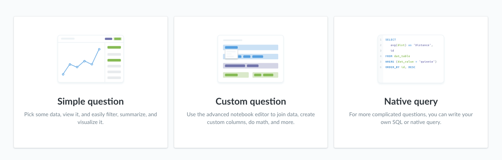
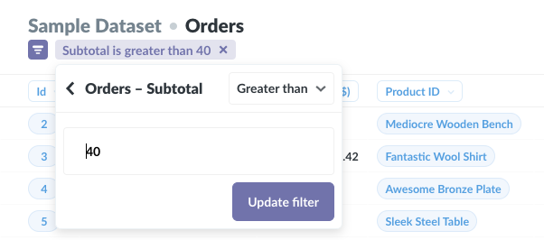
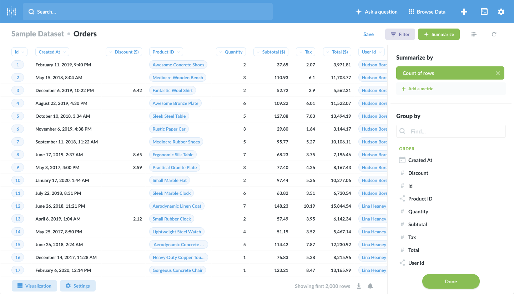
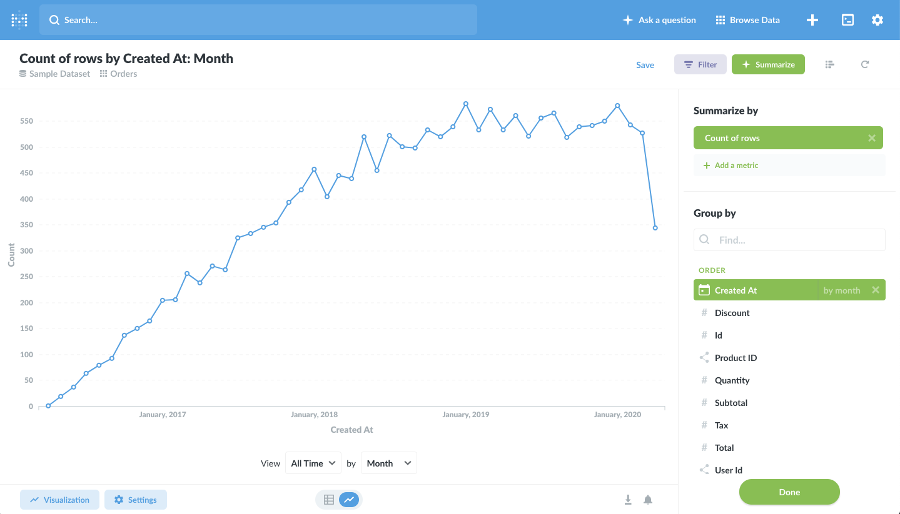
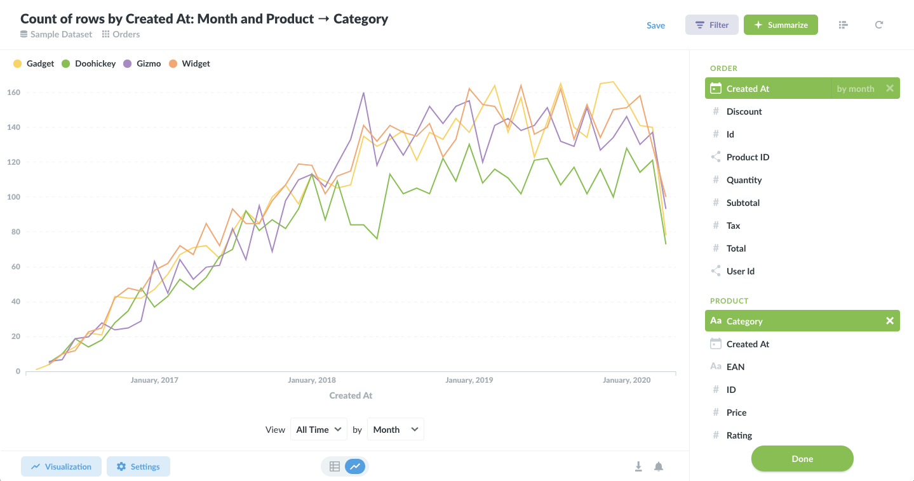
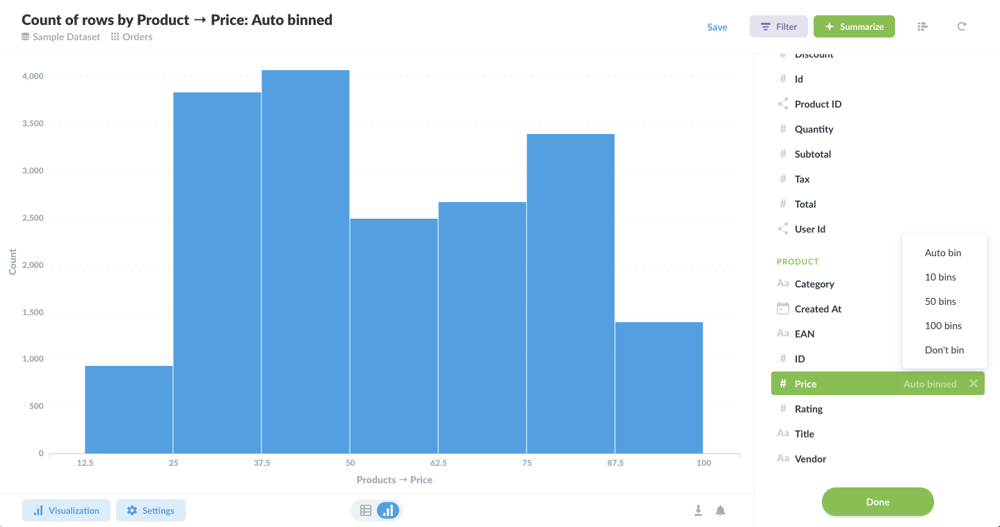
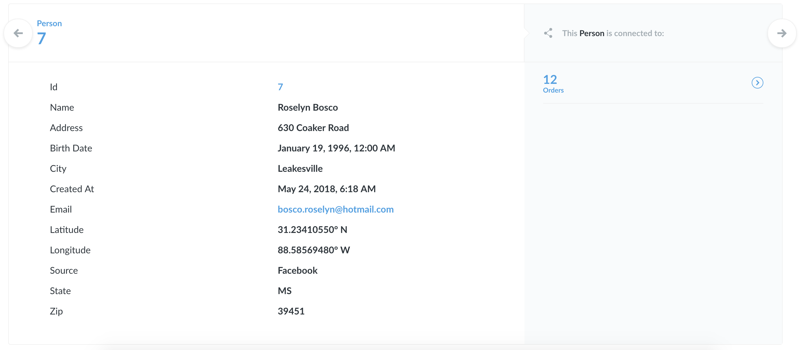
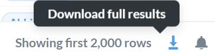

Metabase. Руководство пользователя 04. Вопросы в Metabase
Перевод страницы документации Metabase Asking questions in Metabaseopen in new window.
Вопросы и соответствующие им ответы — это две корневые концепции Metabase. Остальное базируется вокруг вопросов и ответов. Чтобы задать вопрос нажмите кнопку Ask a Question в верху экрана.
Способы начать новый вопрос

После нажатия кнопки Ask a Question откроются три способа задать вопрос:
- Простой режим вопросов, который позволяет фильтровать, суммировать и визуализировать данные.
- Расширенные режимopen in new window, мощный редактор для создания более сложных вопросов которые требуют соединений, нескольких этапов фильтрации и агрегирования, или пользовательских колонок.
- Редактор SQL запросовopen in new window.
Эта страница описывает простой режим.
Задаём простой вопрос
После выбора Simple Question выберите базу данных и отобразится список её таблиц. Выберите таблицу для задания вопроса. Это может быть таблица Users или что-то вроде Events, Orders или Downloads.
При задании вопроса обычно используются фильтрация и суммирование.
Фильтрация
Фильтрация означает уменьшение количества вещей по определённым критериям.
Нажмите кнопку Filter в правом верхнем углу экрана для открытия панели фильтрации. Появится список столбцов таблицы. В зависимости от типа выбранной колонки появятся различный набор параметров фильтрации:
- Фильтр по числовому столбцу позволит выбрать строки в которых число больше, меньше или равно заданному значению, или находится между двумя выбранными значениями.
- Фильтр по столбцу с текстом позволяет выбрать или исключить строки содержащие определённые значения.
- Фильтр по столбцу с датой позволит выбрать диапазон или дни до или после определённой даты.
В фильтрах используются конкретные и относительные даты:
- Конкретные даты, такие как 1 ноября 2010, ссылаются на определённую дату.
- Относительные даты, такие как "последние 30 дней" или "текущая неделя", меняются с течением времени. Относительные даты полезны чтобы даты в вопросе были всегда актуальными, например, в вопросе "сколько пользователей посещали ваш сайт за последние 7 дней?"
Фильтрация по сегментам
Добавленные администратором Metabase именованные фильтры для таблицы появятся над выпадающим списком фильтров в виде фиолетового текста. Они называются "сегменты" и являются ссылками на сочетание фильтров которые часто используются в вашей организации. Они могут назваться "Активные пользователи" или "Самые популярные продукты".
Как только вы будете довольны фильтром нажмите Done, и данные обновятся с учётом фильтра. Если вы хотите изменить фильтр, нажмите маленький фиолетовый значок вверху экрана. Если вы нажмёте X, вы удалите фильтр. Вы можете добавить столько фильтров, сколько нужно.

Суммирование
Когда у нас есть вопрос "Сколько пользователей скачивали приложение каждый день на этой неделе?" или "Какой средний возраст клиентов кто посещает каждый из магазинов на этой неделе?" нам нужно просуммировать данные. Суммирование состоит из двух частей: одно или больше чисел которые нас волнуют (они называются метрики) и того как мы хотим группировать эти числа. Например:
- Метрика — "сколько людей скачали приложение"
- метрика группируется по дням — "каждый день"
- и применён фильтр — "на этой неделе"
Есть два распространённых способа суммировать ваши данные:
- Подсчёт количества строк в вашей таблице
- Получение суммы или среднего значения числовой колонки
Полученное число затем группируется по
- Времени
- Месту
- Другой категории: операционной системе, полу и т.д.
Чтобы сделать это в Metabase, нажмите колонку Summarize справа вверху экрана и откроется боковая панель.

Выбор метрик
Боковая панель имеет две основные части: верхнюю где вы выбираете число (метрику) которую хотите видеть и часть ниже где вы выбираете как группировать это число.
По умолчанию выбрана метрика “count of rows (подсчёт строк) так как она очень распространена, но вы можете изменить её нажав на неё. Вы также можете выбрать более одной метрики: просто нажмите кнопку add a metric. Вы можете удалить выбранную метрику нажатием на иконку X. Основные метрики это:
Sum of …: сумма всех значений в определённой колонке.
Average of …: среднее значение в определённой колонке.
Number of distinct values of…: число уникальных значений в колонке. Это полезно, например, для того чтобы определить сколько разных видов продуктов были проданы в прошлом месяце (не сколько продано всего).
Cumulative sum of…: Промежуточный итог в определённой колонке. Например, вам нужно группировать суммы по дате и смотреть как они растут по времени.
Cumulative count of rows: промежуточный итог количества строк в таблице распределённый по времени.
Standard deviation of …: число которое определяет насколько значения в колонке отклоняются от среднего значения в этой колонке.
Minimum of …: наименьшее значение в колонке.
Maximum of …: наибольшее значение в колонке.
Если администратор создал именованные метрики то они будут в выпадающем списке под общими метриками.
Выбор группы для метрик
В зависимости от выбранных для группировки колонок, Metabase по умолчанию покажет наиболее подходящий способ визуализации. Если вы выберете колонку с датой, вы увидите линейный график как этот:

Когда вы нажимаете на отличную от текущей колонку группировки, группировка переключается на неё. Если вы хотите добавить дополнительную группировку нажмите на иконку плюса (+) на правой стороне колонки. Для удаления группировки нажмите иконку Х.

Некоторые столбцы группировки предоставляют возможность выбирать дополнительные опции. Если для группировки выбрана колонка с датой вы можете нажать на слова by month для установки группировки по дням, неделям, часам, годам и т.д. Если вы группируете по числовой колонке, такой как возраст, Metabase автоматически разложит значения по группам, таким как 0–10, 11–20, 21–30 и т.д. Так же как и с датами доступны дополнительные опции группировки.

Как только настройки метрик и группировки закончены, нажмите Done для закрытия панели Summarize и вы увидите результаты.
Просмотр деталей отдельной записи
Нажмите на идентификатор записи (или первичный ключ) для того чтобы посмотреть больше информации о пользователе, заказе и т.д. Вы можете увидеть все поля соответствующие одной записи и все связанные таблицы которые скрыты в табличном представлении для большей читаемости. Нажмите левую или правую стрелку или нажмите на правую или левую часть экрана чтобы пролистать на другие записи в текущем списке.

Скачайте результаты
Нажмите на кнопку Download, в правом нижнем углу экрана, чтобы экспортировать результаты. Доступные форматы экспорта: .csv, .xlsx, .json. Максимальный размер экспорта — 1 миллион строк.

Далее: создание пользовательских вопросов
Если ваш вопрос более сложный и специфичный используйте мощный редактор пользовательских вопросов.